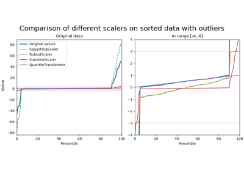

SquashingScaler#
- class skrub.SquashingScaler(max_absolute_value=3.0, quantile_range=(25.0, 75.0))[source]#
Perform robust centering and scaling followed by soft clipping.
When features have large outliers, smooth clipping prevents the outliers from affecting the result too strongly, while robust scaling prevents the outliers from affecting the inlier scaling. Infinite values are mapped to the corresponding boundaries of the interval. NaN values are preserved.
- Parameters:
- max_absolute_value
float, default=3.0 Maximum absolute value that the transformed data can take.
- quantile_range
tupleoffloat, default=(0.25, 0.75) The quantiles used to compute the scaling factor. The first value is the lower quantile and the second value is the upper quantile. The default values are the 25th and 75th percentiles, respectively. The quantiles are used to compute the scaling factor for the robust scaling step. The quantiles are computed from the finite values in the input column. If the two quantiles are equal, the scaling factor is computed from the 0th and 100th percentiles (i.e., the minimum and maximum values of the finite values in the input column).
- max_absolute_value
Notes
This transformer is applied to each column independently. It uses two stages:
The first stage centers the median of the data to zero and multiplies the data by a scaling factor determined from quantiles of the distribution, using scikit-learn’s
RobustScaler. It also handles edge-cases in which the two quantiles are equal by following-up with aMinMaxScaler.The second stage applies a soft clipping to the transformed data to limit the data to the interval
[-max_absolute_value, max_absolute_value]in an injective way.
Infinite values will be mapped to the corresponding boundaries of the interval. NaN values will be preserved.
The formula for the transform is:
\[\begin{split}\begin{align*} a &:= \begin{cases} 1/(q_{\beta} - q_{\alpha}) &\text{if} \quad q_{\beta} \neq q_{\alpha} \\ 2/(q_1 - q_0) &\text{if}\quad q_{\beta} = q_{\alpha} \text{ and } q_1 \neq q_0 \\ 0 & \text{otherwise} \end{cases} \\ z &:= a.(x - q_{1/2}), \\ x_{\text{out}} &:= \frac{z}{\sqrt{1 + (z/B)^2}}, \end{align*}\end{split}\]where:
\(x\) is a value in the input column.
\(q_{\gamma}\) is the \(\gamma\)-quantile of the finite values in X,
\(B\) is max_abs_value
\(\alpha\) is the lower quantile
\(\beta\) is the upper quantile.
References
This method has been introduced as the robust scaling and smooth clipping transform in Better by Default: Strong Pre-Tuned MLPs and Boosted Trees on Tabular Data (Holzmüller et al., 2024).
Examples
>>> import pandas as pd >>> import numpy as np >>> from skrub import SquashingScaler
In the general case, this scale uses a RobustScaler:
>>> X = pd.DataFrame(dict(col=[np.inf, -np.inf, 3, -1, np.nan, 2])) >>> SquashingScaler(max_absolute_value=3).fit_transform(X) array([[ 3. ], [-3. ], [ 0.49319696], [-1.34164079], [ nan], [ 0. ]])
When quantile ranges are equal, this scaler uses a customized MinMaxScaler:
>>> X = pd.DataFrame(dict(col=[0, 1, 1, 1, 2, np.nan])) >>> SquashingScaler().fit_transform(X) array([[-0.9486833], [ 0. ], [ 0. ], [ 0. ], [ 0.9486833], [ nan]])
Finally, when the min and max are equal, this scaler fills the column with zeros:
>>> X = pd.DataFrame(dict(col=[1, 1, 1, np.nan])) >>> SquashingScaler().fit_transform(X) array([[ 0.], [ 0.], [ 0.], [nan]])
Methods
fit(X[, y])Fit the transformer to a column.
fit_transform(X[, y])Fit the transformer and transform a column.
get_feature_names_out([input_features])Get output feature names for transformation.
get_params([deep])Get parameters for this estimator.
set_output(*[, transform])Set output container.
set_params(**params)Set the parameters of this estimator.
transform(X)Transform a column.
- get_feature_names_out(input_features=None)[source]#
Get output feature names for transformation.
- Parameters:
- input_featuresarray_like of
strorNone, default=None Input features.
If input_features is None, then feature_names_in_ is used as feature names in. If feature_names_in_ is not defined, then the following input feature names are generated: [“x0”, “x1”, …, “x(n_features_in_ - 1)”].
If input_features is an array-like, then input_features must match feature_names_in_ if feature_names_in_ is defined.
- input_featuresarray_like of
- Returns:
- set_output(*, transform=None)[source]#
Set output container.
See Introducing the set_output API for an example on how to use the API.
- Parameters:
- transform{“default”, “pandas”, “polars”}, default=None
Configure output of transform and fit_transform.
“default”: Default output format of a transformer
“pandas”: DataFrame output
“polars”: Polars output
None: Transform configuration is unchanged
Added in version 1.4: “polars” option was added.
- Returns:
- selfestimator instance
Estimator instance.
- set_params(**params)[source]#
Set the parameters of this estimator.
The method works on simple estimators as well as on nested objects (such as
Pipeline). The latter have parameters of the form<component>__<parameter>so that it’s possible to update each component of a nested object.- Parameters:
- **params
dict Estimator parameters.
- **params
- Returns:
- selfestimator instance
Estimator instance.
Gallery examples#


SquashingScaler: Robust numerical preprocessing for neural networks